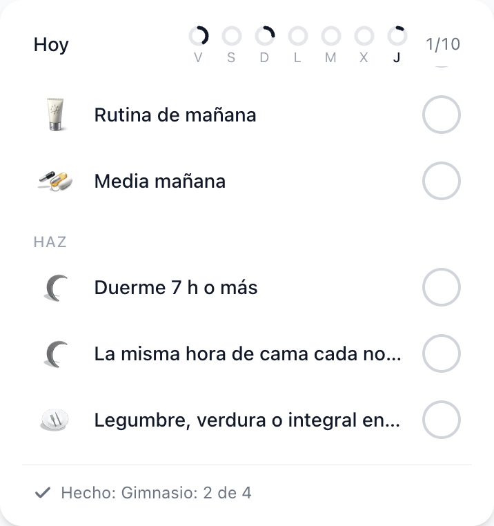
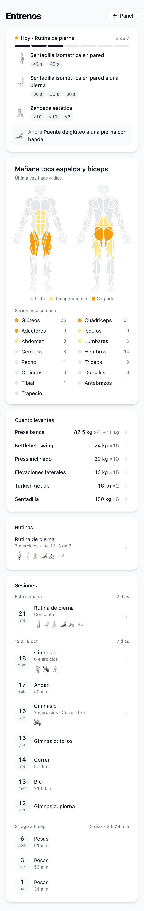
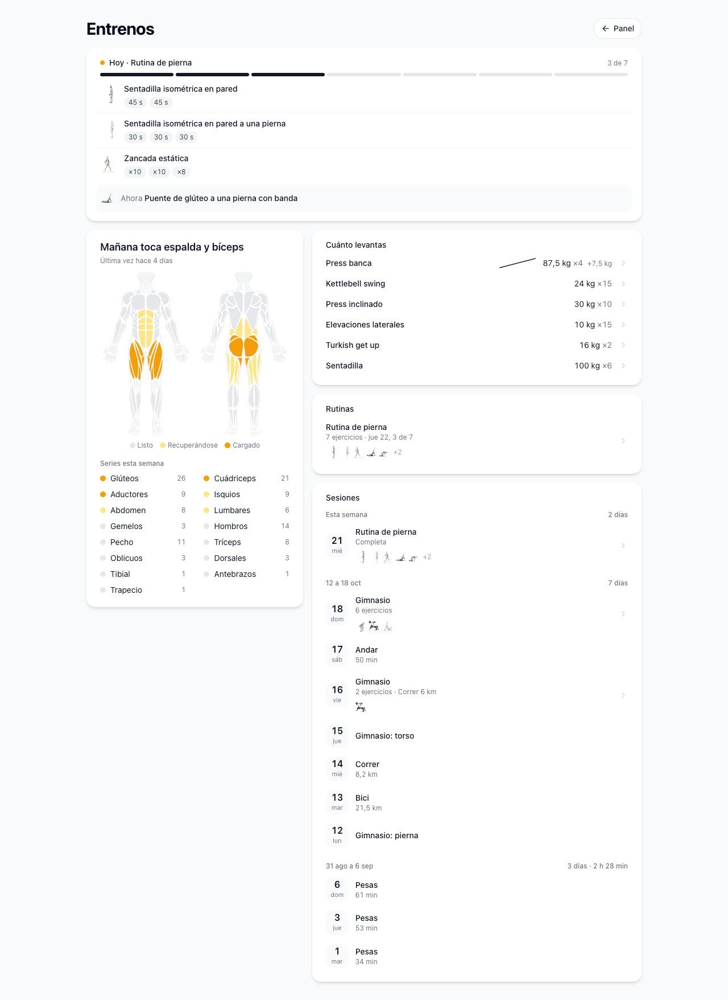

Salud, más limpio
Así queda, sacado de la app en local (22-oct). datos de prueba
«Hoy» en el panel
- Solo 5 a la vista. Antes 13 filas de golpe (9 por hacer, 3 de «Haz» y «Hecho»). Ahora las 5 que más importan; la sexta se difumina y el resto, «Haz» incluido, está deslizando dentro de la tarjeta.
- Amber solo para lo que va con retraso. Antes 7 de 9 círculos eran amber solo por ser «de hoy y sin hacer». Ahora son grises, y el amber vuelve solo cuando algo va con retraso en la semana. Lo que va con retraso sigue subiendo arriba: «Correr o bici: 0 km de 40 km» es la primera.
- Sigue la hora del día. Primero lo que va con retraso; luego lo que toca ahora (de una hora antes a tres después); luego lo de cualquier hora; luego lo de más tarde, por su hora; y al final lo que se pasó. A las 8:15: En ayunas, Rutina de mañana, Pastilla… A las 22:30: Rutina de noche, Pastilla, Correr o bici, A la cama… y la mañana al final.
- «Antes de entrenar» no tiene hora. No sale en «Hoy» hasta que entrenas. Media hora después de lo último del entreno (el WHOOP que acaba o el último ejercicio que dices), te llega una vez por WhatsApp: «¿Te tomaste lo de antes de entrenar (Colágeno y Vitamina C)?» (lo que tiene la copia de prueba). Con un «sí» se tacha. Ya no entra en los avisos de la mañana.
- Nada te pide una foto. Todo se marca con un toque o diciéndolo: hábitos, comidas, peso y entreno. Si mandas una foto igual, cuenta.
- Sin flechitas. La fila entera se toca para ver el porqué, como antes.


Entrenos
- Una sola semana, de lunes a domingo. Arriba ponía «5 de 7 días» y en Sesiones «Esta semana · 1 día». Arriba ya no hay número; el panel pone «2 días esta semana».
- Sesiones empieza cerrada. La pierna de ayer salía abierta debajo de la misma rutina. Ahora es una línea con sus dibujos.
- Rutinas, una línea por rutina. «7 ejercicios · jue 22, 3 de 7» y los dibujos; se abre con el orden entero.
- Horas de la semana solo si cuadran. «7 días · 50 min» parecía una semana de 50 minutos. Ahora solo sale cuando todas las sesiones tienen su tiempo.


Todo esto está solo en tu portátil: sale con el próximo deploy. pnpm test pasa; typecheck y lint sin correr.